― 2回目の訪問（2023年12月） ―
2023.12に食べました。こちらのお店は「第13回沖縄そばスタンプラリー（2023.10.1～2024.2.29）」の参加店で、27店舗目/34店舗として行きました😊
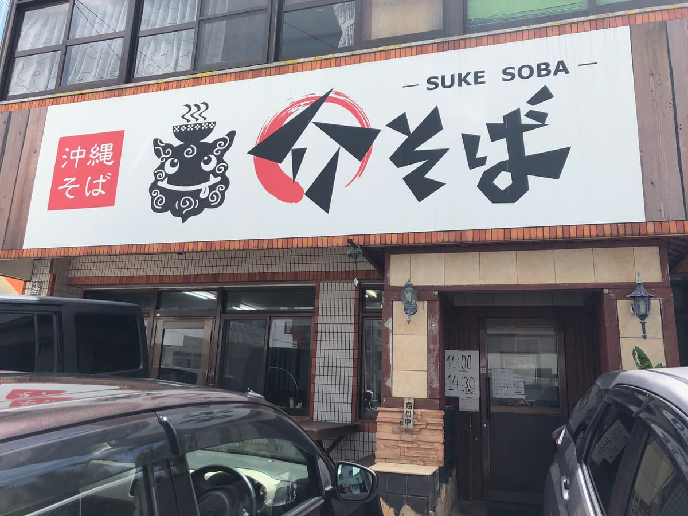
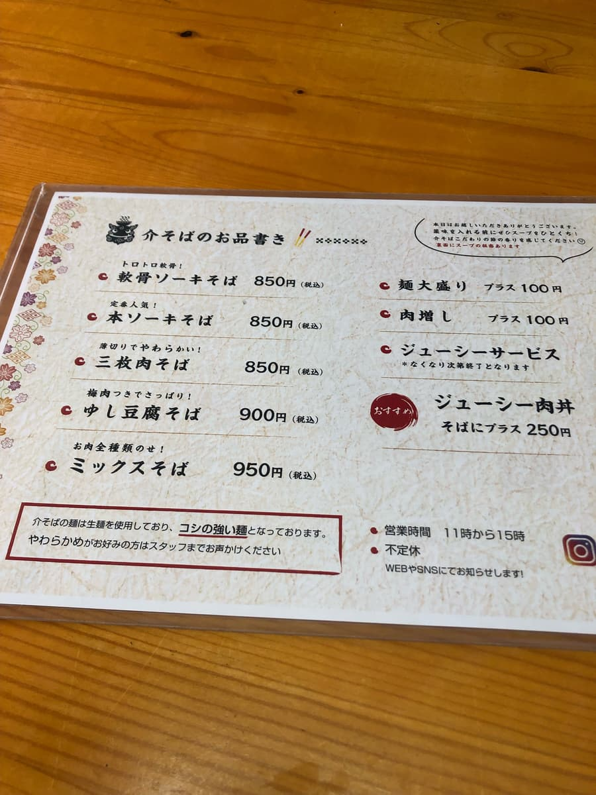
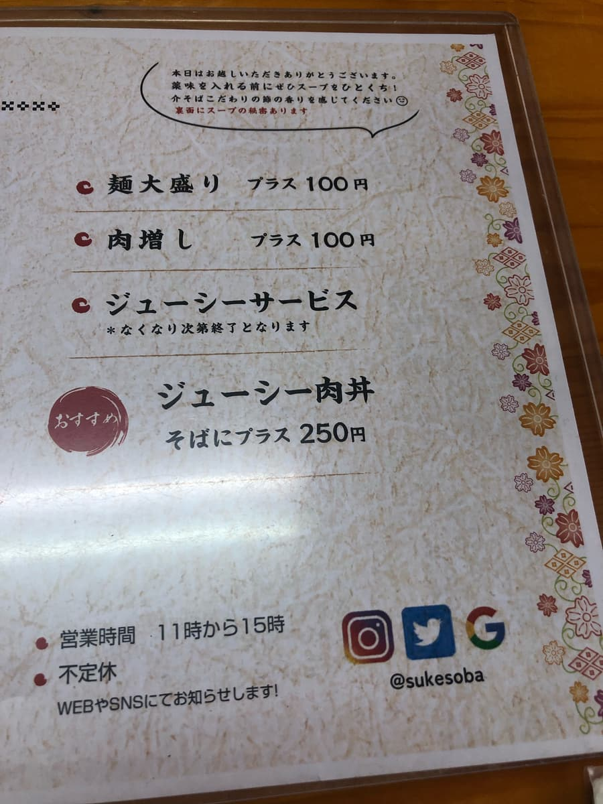
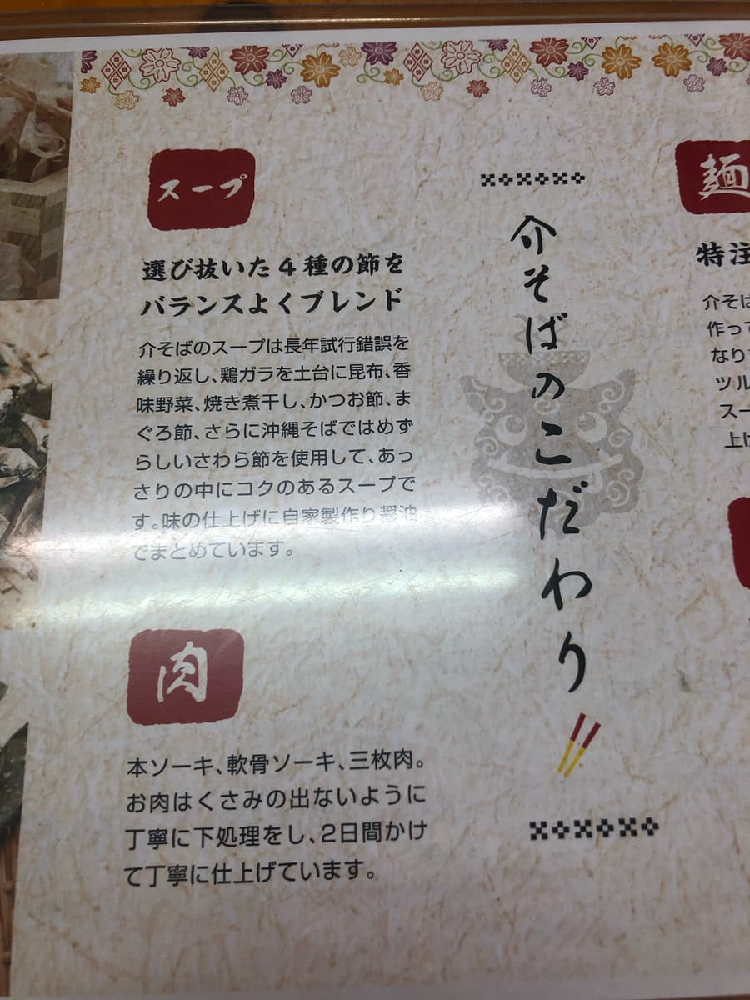
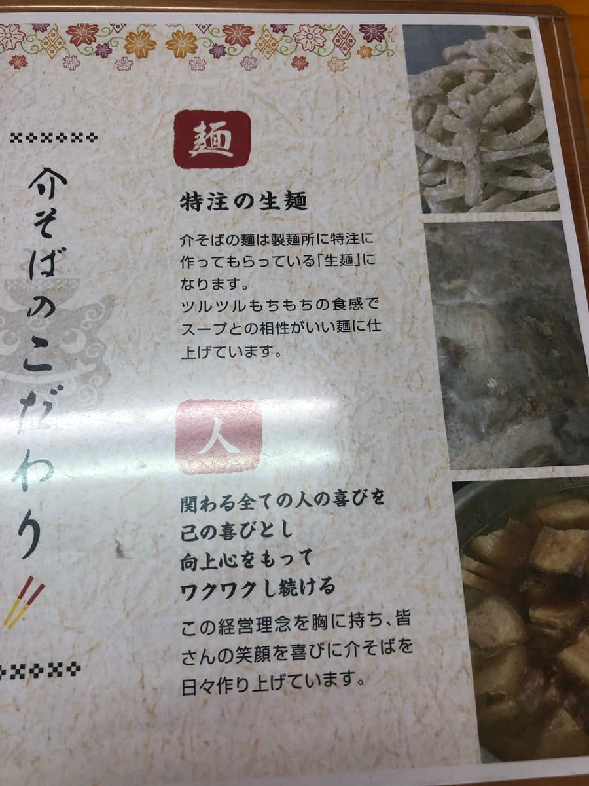
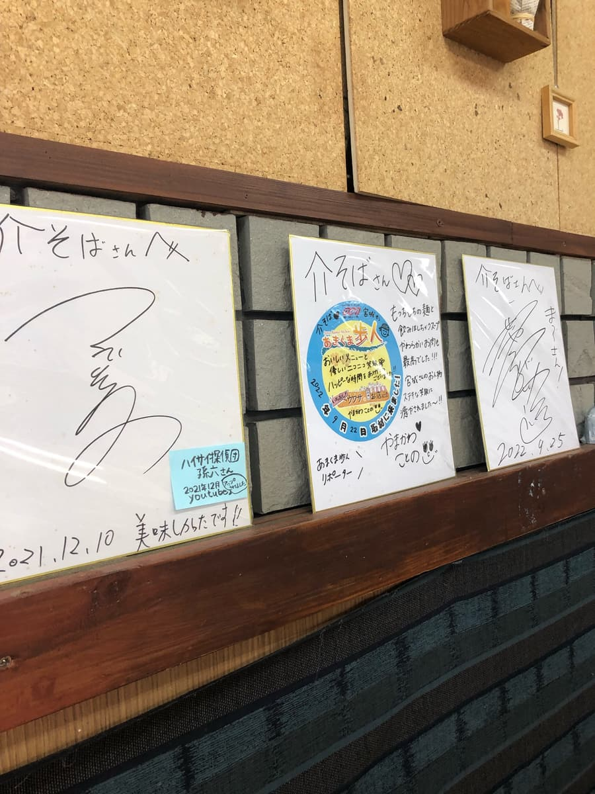
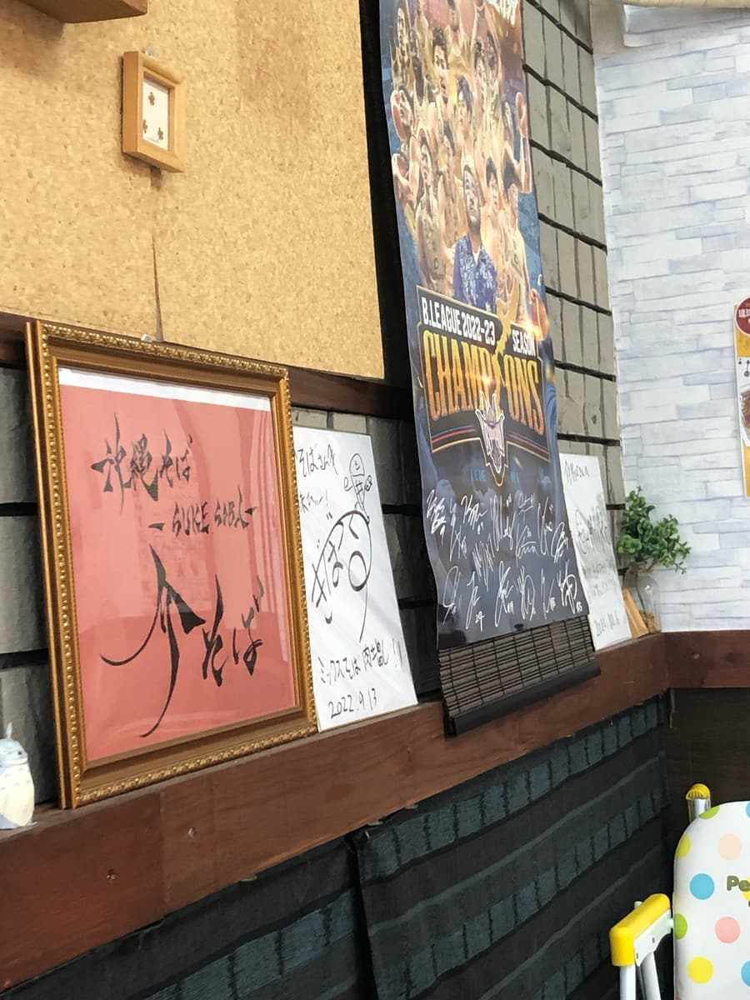
こちらのお店は2023.9に初体験して味も分かりますね😁 スープは4種の魚節（焼き煮干し、鰹節、まぐろ節、さわら節）で鰹出汁が効いて美味しいです。
麺も生麺で透明感があってつるつるもちもち食感で美味しいですね。
今回は、スタンプラリー冊子で紹介されていた「軟骨ソーキそば」を注文しましたが、注文後に前回は何を注文したか確認したところ、同じ「軟骨ソーキそば」(^0^;) 違うメニューにすれば良かったと少し後悔(^0^;)
また、何かの機会にということにしましょう😆
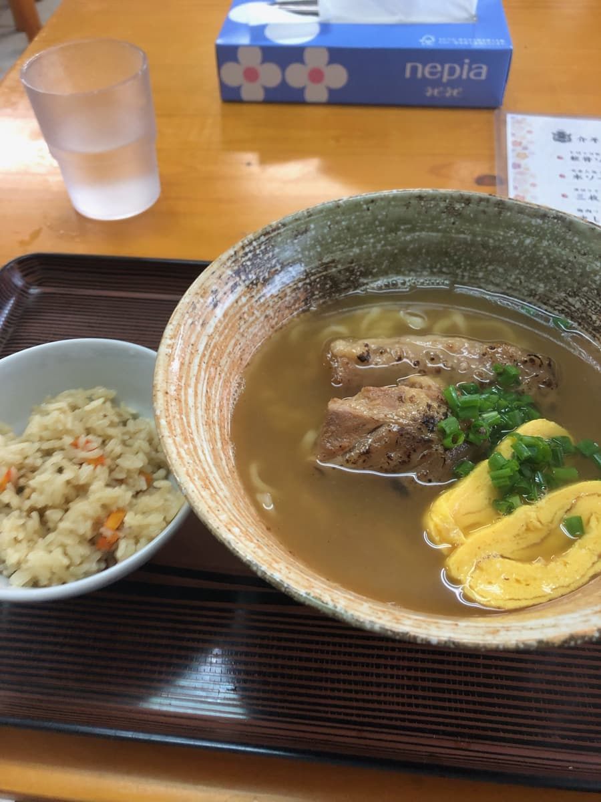
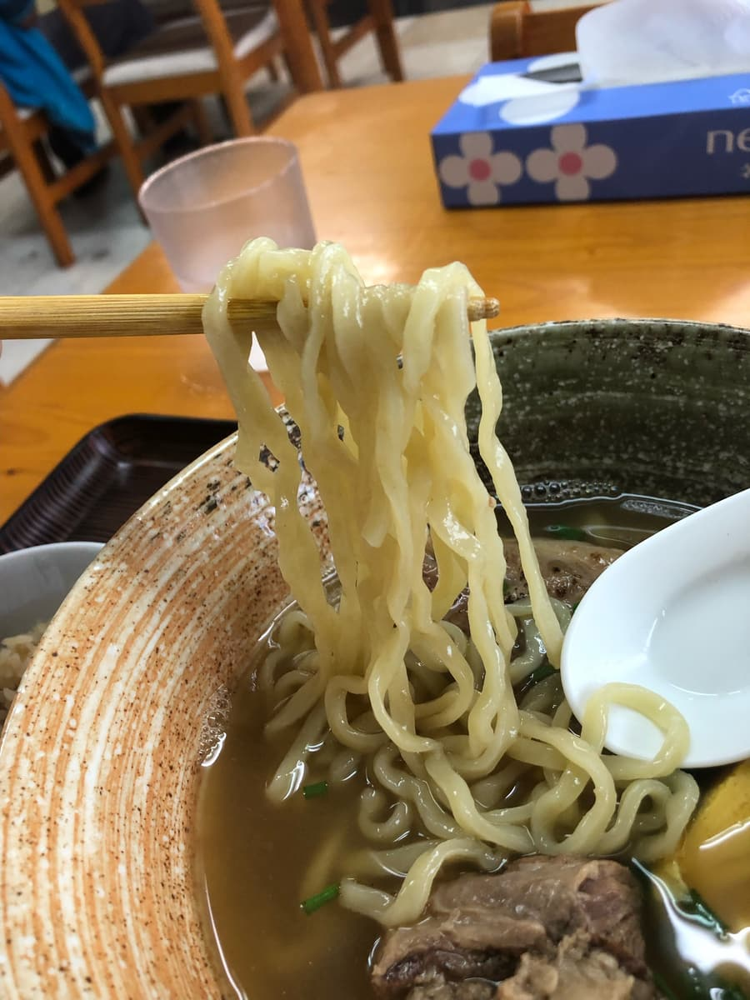
前にも味わったとおり、スープは相変わらず鰹出汁が効いて普通にうまい😋 麺も透明感あってツルツルもちもちでこちらも普通に旨い。
軟骨ソーキもプルプルで美味しいです。
評価（10.5点/15点）：普通に美味しいです。こちらのお店は今回で2回目となりますが、上位レベル（オススメ店、オススメ店に引けを取らない）に近いと感じました。是非、こちらのお店でも食べてみては如何でしょうか？
麺 ：★★★✬☆（3.5）
スープ：★★★✬☆（3.5）
具 ：★★★✬☆（3.5）
― 1回目の訪問（2023年9月） ―
2023.9に食べに行きました😊
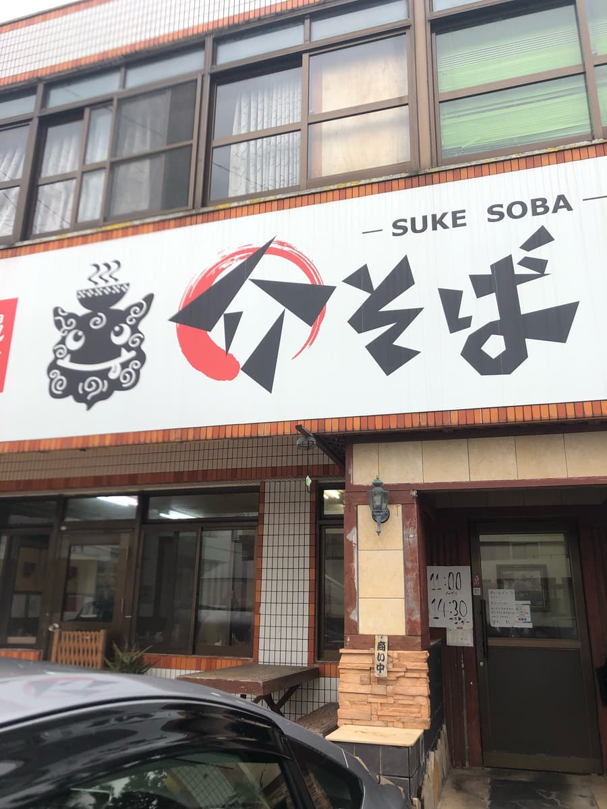
相変わらずの無計画で、パイプラインを走りながら、「沖縄そば屋ないかな？」と探していたら、突然こちらを見つけて入りましたｗｗ
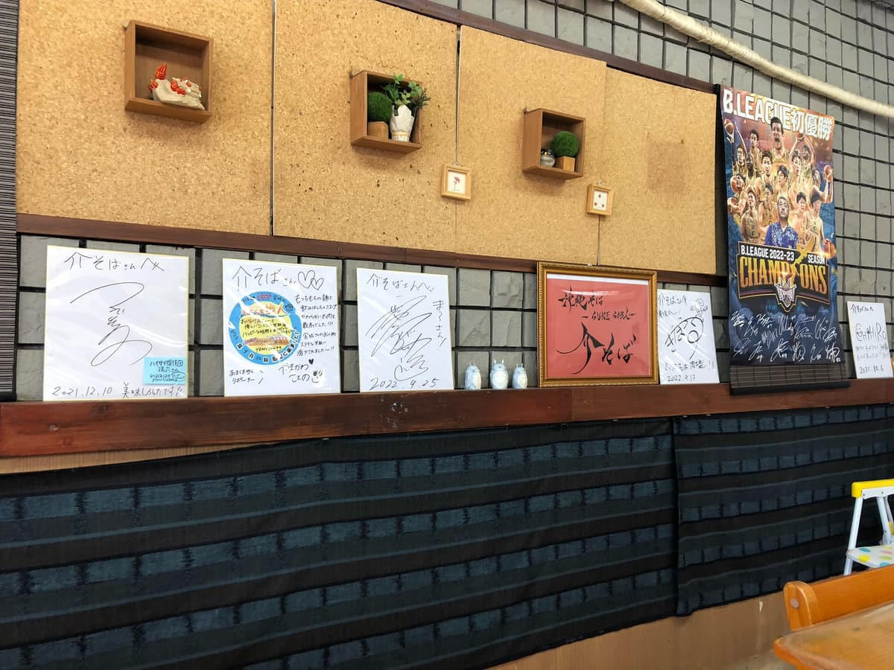
店内は、お昼時でしたが、月曜の平日だからか、お客さんは少なく空いていましたね。
メニュー表の中から店員さんから「よく注文されている」と聞いた「軟骨ソーキそば」を注文することに。
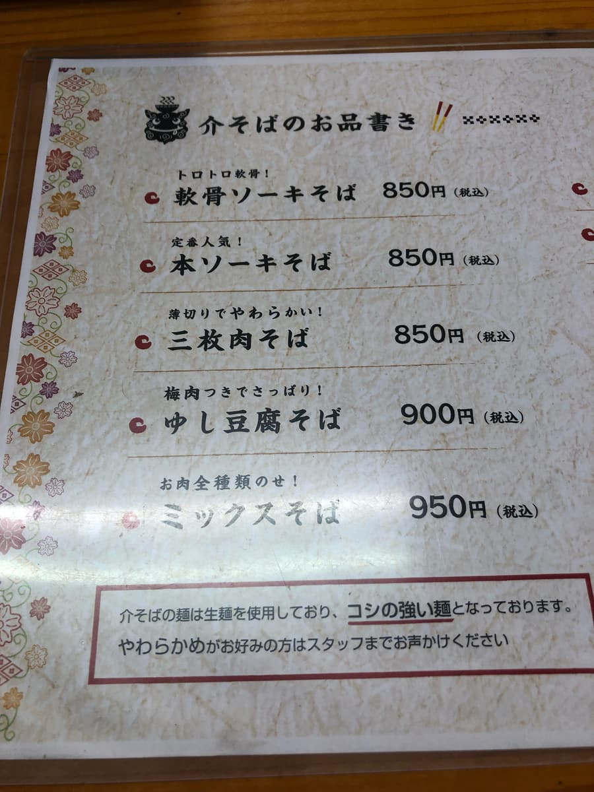
軟骨ソーキそばが来る間、メニュー表を見て時間つぶし🤗 生麵を使用していて、「コシの強い麺」と書いてあったので、いしぐふーさんぐらい歯ごたえあるかな？と想像。
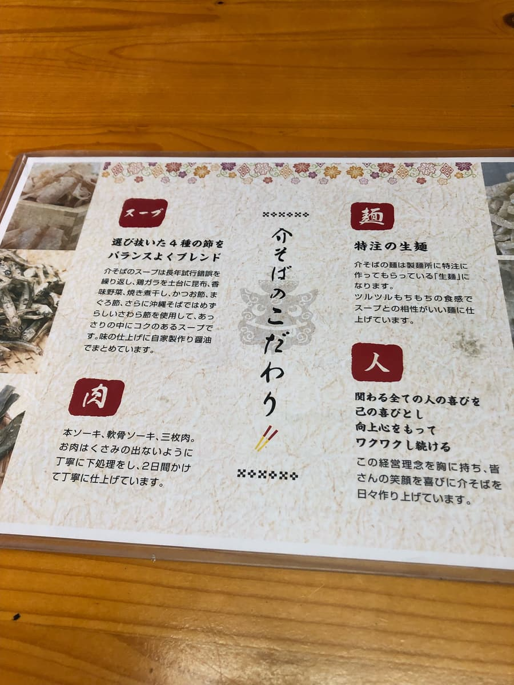
説明によれば、スープは４種の節を使用しているようです。おいしそう🤤ですが、かつお節、まぐろ節、さわら節と３種しか書いていない(;^ω^) もう一種は焼き煮干しのことですかね？
麺の説明も特注の生麺でつるつるもちもちと書いていて美味しそうですね😊
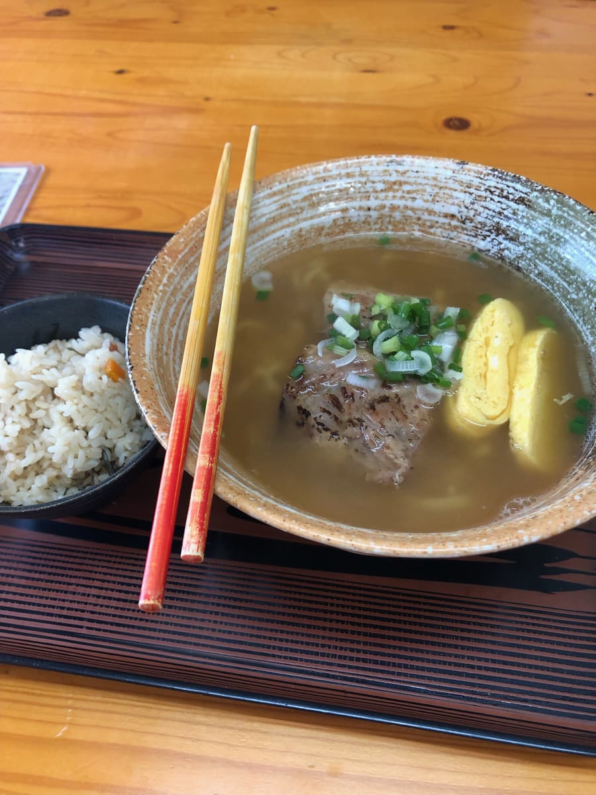
メニュー読んでいる間に来ましたｗｗ スープの色は濁った感じで、豚骨ベースにも見えますね。恒例のスープを一飲み。
やはり、メニュー表の説明のとおりカツオ出汁が効いてますね、普通にうまい😋
生麺は、透明感のある感じで、細め。説明のとおりつるつるもちもちでこちらも普通に旨い😋 ただし、「コシが強い」と書いていましたが、そこまでは強くないです。スープ、麺とも恩納村で食べた「金月（きんちち）そば」に似ているかもと感じました。何か関係がありますかね？
ジューシーのサービスも良いですね、こちらは味はあっさり系の薄めの感じでした。軟骨ソーキもトロトロで、こちらも味付けはあっさりした感じで仕上がっています。
評価（10点/15点）：普通に美味しいです。スープ、麺は恩納村で食べた「金月（きんちち）そば」さんと似ていると思い、美味しいと思いました。皆さんも一度は如何でしょうか？ 支払いが現金オンリーだったのでキャッシュレス対応になるともっと良いですね
麺 ：★★★✬☆（3.5）
スープ：★★★✬☆（3.5）
具 ：★★★☆☆（3）